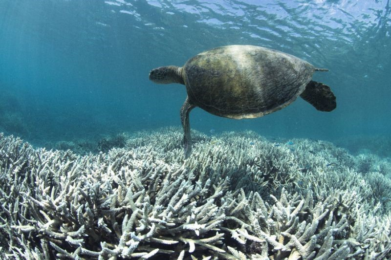
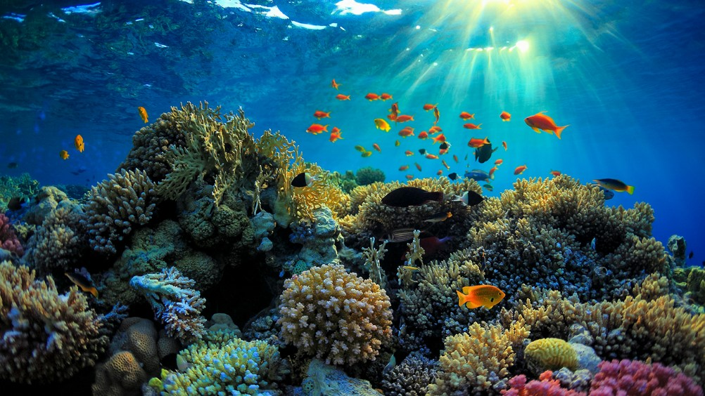

Great Barrier Reef in Danger After
Latest Coral Bleaching
An article by Thushanthan Kulendran
The Great Barrier Reef is widely considered as one of the most breathtaking and stunning works of art Mother Nature has ever established. The reef contains a multitude of aquatic life, comprising of over 3000 individual reef systems and coral cays, while also consisting of hundreds of colorful, tropical islands and beaches. Thanks to these amazing natural characteristics, the Great Barrier Reef was inscribed as a UNESCO World Heritage Site in 1981.
However, new aerial surveys have found that back-to-back severe bleaching events have afflicted over two-thirds of the largest coral reef in the world. Scientists at the Australian Research Council’s Centre of Excellence for Coral Reef have discovered that two colossal bleaching events have affected a 1500-kilometre stretch of the reef. 
Only its southern section remained unharmed.
Professor Terry Hughes stated that the amount of time it’ll have to take for the coral to recover will be about ten years. The 2017 bleaching not only leads to poor water quality, but also threatens species unique to the reef including the crown-of-thorns starfish. Hughes has warned Australia that the only prominent way to save the reef is by taking action on climate change.
Coral bleaching only occurs when water temperatures are on the rise. As the waters get warmer, the coral ejects the algae that dwell inside of them, resulting in a bleached, whitened colour. It’s only because of climate change that ocean levels and temperatures have been rising. So, if we want to maintain the incomparable beauty of Mother Nature’s greatest creations, we better tackle the issue of climate change as fast as possible. It’s been a thorn on our side for a while now, and it’s time we get rid of it.